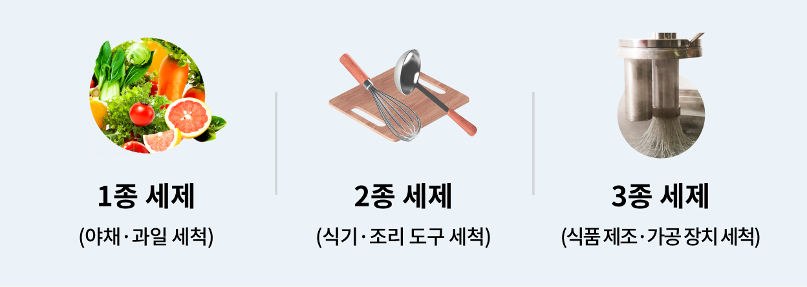
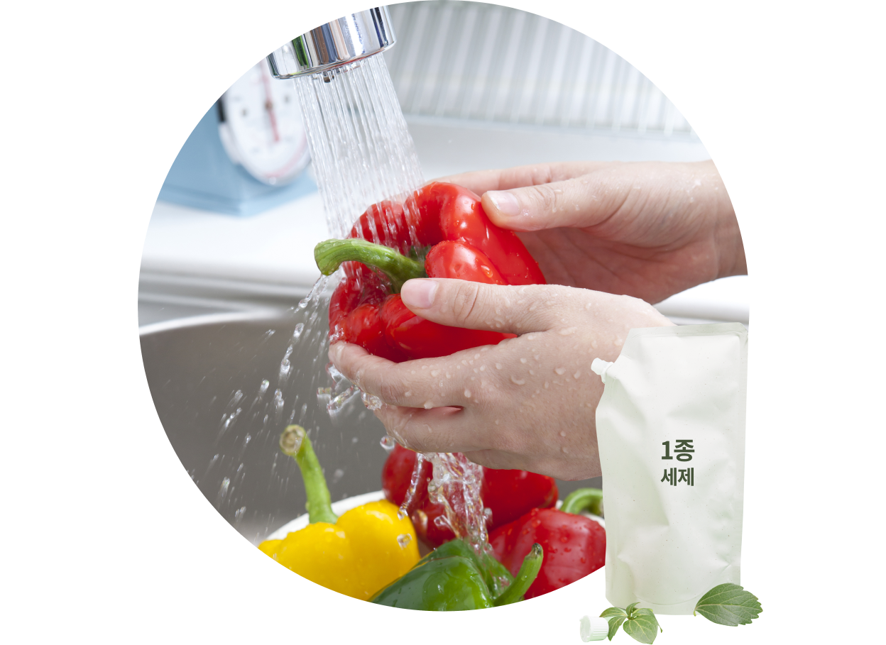
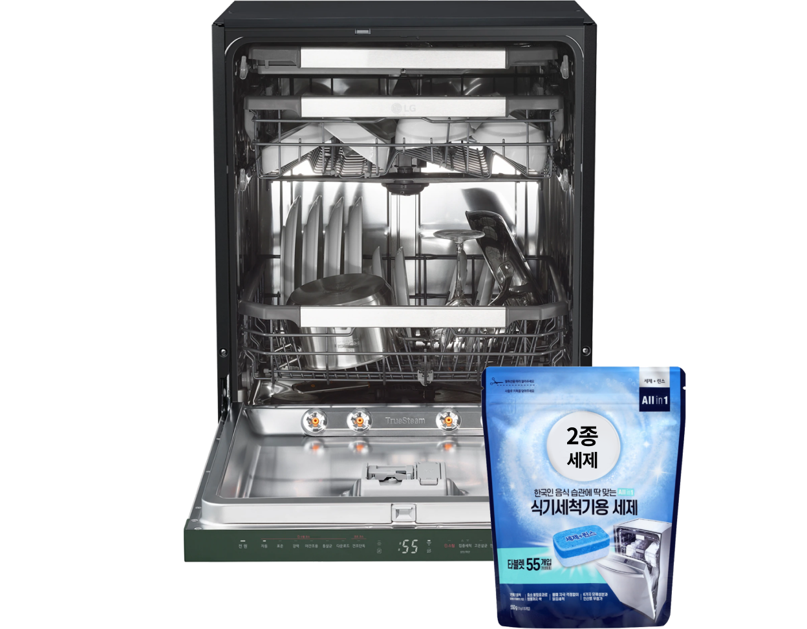

주방식기세척기


보다 더 스마트한 일상
LG ThinQ의 시작

보다 더 스마트한 일상, LG ThinQ
씽큐는 사람과 가전을 AI 기술로 연결하여 더 편리하고 놀라운 일상을 만드는 LG전자의 스마트 홈 플랫폼입니다.
* 본 콘텐츠는 ThinQ 앱의 콘텐츠입니다.
식기나 집기류를 세척할 때 꼭 필요한 게 바로 주방 세제죠. 그런데 이 주방 세제들이 유형에 따라 분류된다는 사실, 알고 계셨나요?
유형별 주방 세제들의 용도와 특징을 알아보고 식기세척기에 적합한 세제도 확인해 보세요.
용도에 맞춰 사용해요!
국내에서 시판되고 있는 세제는 위생용품의 표시 기준에 따라 총 3종으로 구분돼요. 용도에 따라 다르지만, 가정에서 주로 사용하는 주방 세제는 1종과 2종이죠.

1종 세제
1종 세제는 주로 그대로 먹을 수 있는 야채나 과일 등을 세척하는 데 사용해요. 일반적으로 흔히 볼 수 있는 주방 세제들이 1종 세제에 해당되죠.

-
2종 세제는 효소 등의 성분 차이로 1종 세제보다 세척 성능이 좋고 거품 발생량이 적기 때문에 식기 세척에는 2종 세제 사용을 권장해 드려요.
-
세척 성능은 좋지만 잔류 세제가 걱정된다면 식기세척기의 헹굼 옵션 횟수를 추가하여 사용하는 것을 추천해 드려요.
-
2종 세제를 용도 이외로 사용하거나 규정 사용량 이상으로 사용하면 안 돼요. 2종 세제는 3종 세제의 목적으로도 사용할 수 있어요.
2종 세제
2종 세제는 식기나 조리 도구 등 식품용 기구를 세척하는 데 사용해요. 일반적으로 식기세척기 전용 세제가 해당되죠.

-
1종 세제의 용액에 야채 혹은 과일 등을 5분 이상 담그면 안 돼요.
-
1종 세제의 용액으로 야채, 과실, 식기 또는 조리 도구 등을 씻은 후에는 반드시 음용에 적합한 물로 씻어야 해요. 흐르는 물을 사용할 경우 야채나 과일류는 30초 이상, 식기류는 5초 이상 씻고, 흐르지 않는 물을 사용할 때는 물을 교체해서 2회 이상 씻어주세요.
-
1종 세제는 2종 또는 3종 세제의 목적으로 사용할 수 있어요. 즉, 야채나 과일뿐 아니라 식기류를 손 설거지할 때에도 사용할 수 있죠.
3종 세제
3종 세제는 식품 제조 장치나 가공 장치 등을 세척하는 데 사용해요.
-
3종 세제를 용도 이외로 사용하거나 규정 사용량 이상으로 사용하면 안 돼요.
-
3종 세제는 1종 또는 2종 세제의 목적으로 사용해서도 안돼요.
주방 세제의 종류를 잘 구분하여 용도에 맞게 활용해야 해요.


LG ThinQ
ThinQ 하나로 더 좋아지는 일상
일상을 더 편하고 스마트하게 만들어주는 씽큐 앱을 지금 바로 만나보세요.
- #세제
- #세제종류
- #식기세척기
- #그릇세척
- #식기세척기사용법
- #식기세척기세제
- #그릇얼룩
- #과일세척
- #주방기구세척